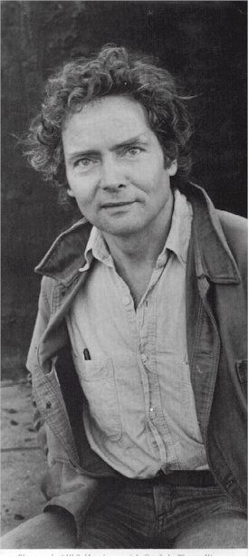

Exploring the Piazza dell’Arte: W.S. Merwin
One of the most dramatic examples of the revitalization of downtown Scranton is the work being done at the Lackawanna County Courthouse. Among the improvements unveiled there recently is the new Piazza dell’Arte which pays tribute to Scranton natives who achieved national and international success in the arts and humanities.
Over the next few weeks, we’ll publish a series of articles paying tribute to the individuals named on the Piazza dell’Arte with some additional information, links to valuable resources and ties to the current Scranton community. Our first subject will be the Pulitzer Prize winning poet William Stanley Merwin.
Merwin was born Sept. 30, 1927 in New York City but grew up in New Jersey and Scranton. The son of a Presbyterian minister, Merwin is quoted as saying, “I started writing hymns for my father as soon as I could write at all.”
After graduating from Princeton University in 1948 where he was a classmate of Galway Kinnell, and studied poetry with R.P. Blackmur and John Berryman, Merwin traveled through Europe, becoming a tutor to Robert Graves’ son when he settled in Majorca, Spain, in 1950. Graves would be a major influence on Merwin’s poetry.
His first collection of poems, “A Mask for Janus” (1952), was selected by W. H. Auden for the Yale Series of Younger Poets and revealed the influence both of Graves and the medieval poetry Merwin was translating at the time.
He returned to the United States in 1956 upon earning a fellowship from the Poets’ Theater in Cambridge, Mass. This time in his life marked a shift in style for Merwin as his connection to a group of Boston-area writers led him to focus on more introspective and personal subjects and to experiment with form and irregular metrics. He produced “Green with Beasts” (1956) and “The Drunk in the Furnace” (1960) during this period.
Merwin moved back to Europe, living in London and the South of France and becoming close friends with Sylvia Plath and Ted Hughes. He staunchly opposed the Vietnam War and his next two volumes of work “The Lice” (1967) and “The Carrier of Ladders” (1970), both employed classical legends to voice his anti-war sentiments. “The Carrier of Ladders” earned Merwin the Pulitzer Prize in 1971.
In 1976, Merwin moved to Hawaii to study with the Zen Buddhist master Robert Aitken, eventually settling in Maui. He would devote significant time to the restoration of rainforests in Hawaii. His dedication to Buddhism and environmentalism would inform works like “The Compass Flower” (1977), “Opening the Hand” (1983) and “The Rain in the Trees” (1988), as well as “The Folding Cliffs,” a novel-in-verse built upon the history and legends of Hawaii.
Merwin’s catalog includes over 20 books of poetry, 20 books of translation and numerous plays, books of prose and memoirs. He is a former Chancellor of The Academy of American Poets, has served as Poetry Consultant to the Library of Congress and currently lives and works in Hawaii. Recent collections include “Present Company” (2007) and “Migration: New & Selected Poems” (2005) which won the 2005 National Book Award.
Spiritual Heir: Andrea Talarico. Though Talarico, whose first collection of poetry “Spinning with the Tornado” was published in 2003, might consider her style more closely aligned with Merwin’s friend Sylvia Plath, her interest in exploring personal themes through her poetry and her dedication to improving the community in which she lives are very reminiscent of Merwin. In addition to being an accomplished poet, Talarico is the owner and operator of Anthology New and Used Books, Center Street, Scranton, which recently earned her the MetroAction Young Entrepreneur Award.
This article was part of a series that explored the lives and legacies of the artists featured on the Piazza dell’Arte at Courthouse Square, Scranton. It first appeared on Electric City Renaissance. Read the rest of the series.